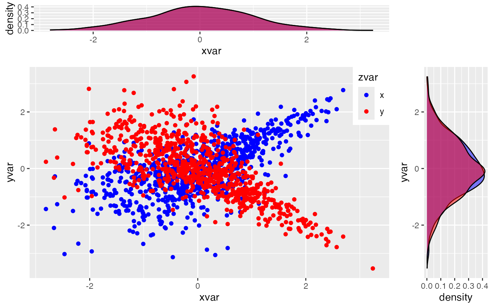
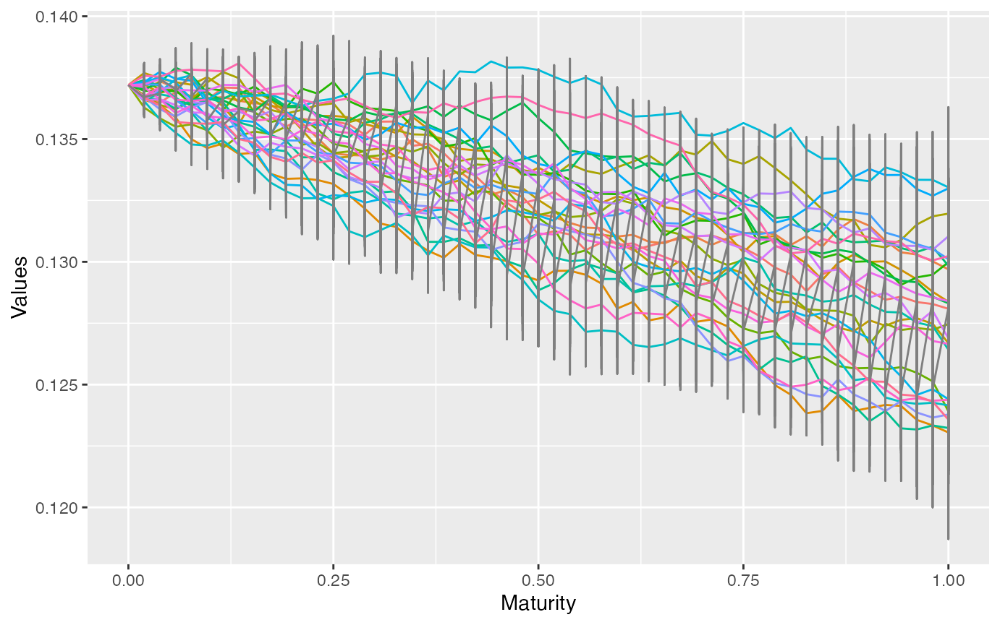
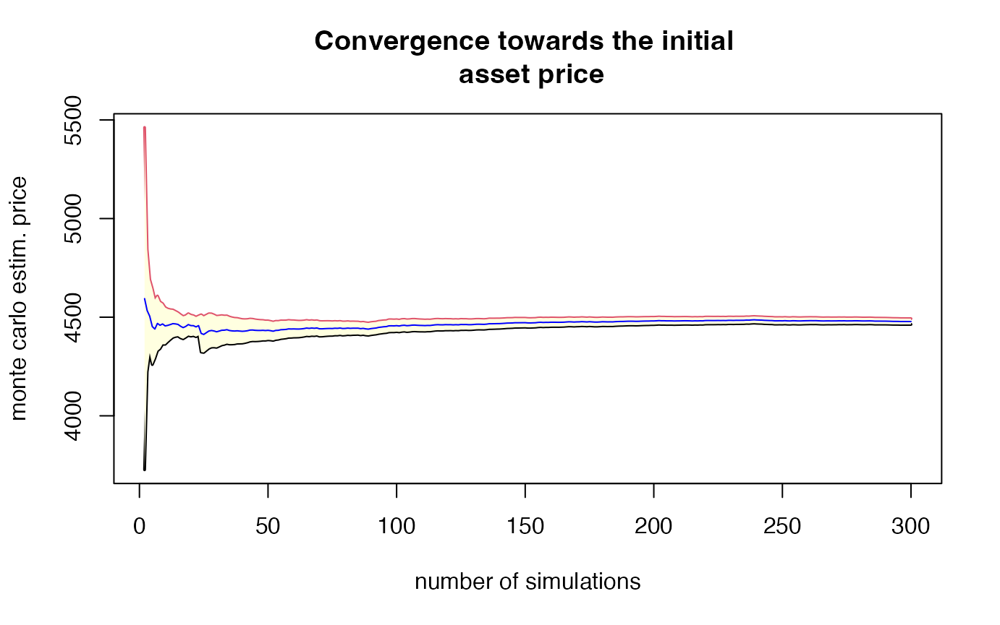
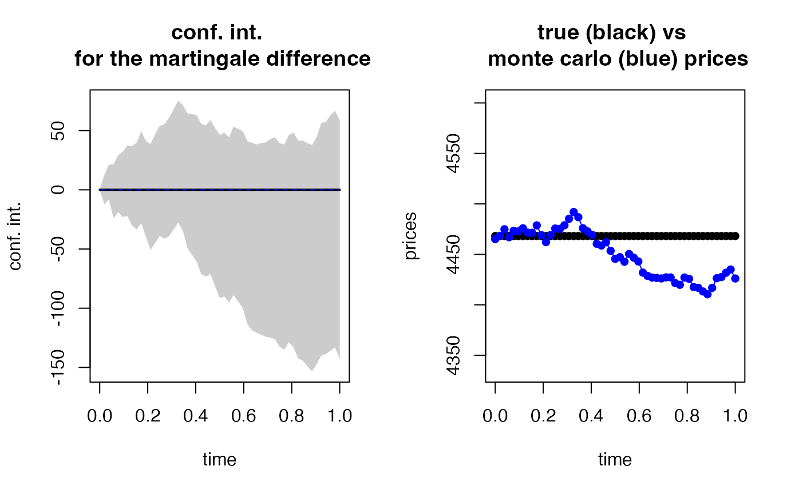

For more details (and text), read https://www.researchgate.net/publication/338549100_ESGtoolkit_a_tool_for_stochastic_simulation_v020.
devtools::install_github("cran/fOptions")## Using GitHub PAT from the git credential store.## Downloading GitHub repo cran/fOptions@HEAD##
## ── R CMD build ─────────────────────────────────────────────────────────────────
## * checking for file ‘/private/var/folders/cp/q8d6040n3m38d22z3hkk1zc40000gn/T/RtmpDumc1g/remotes8f3ffa41c5e/cran-fOptions-6643ac7/DESCRIPTION’ ... OK
## * preparing ‘fOptions’:
## * checking DESCRIPTION meta-information ... OK
## * cleaning src
## * checking for LF line-endings in source and make files and shell scripts
## * checking for empty or unneeded directories
## Omitted ‘LazyData’ from DESCRIPTION
## * building ‘fOptions_3042.86.tar.gz’## Installing package into '/private/var/folders/cp/q8d6040n3m38d22z3hkk1zc40000gn/T/Rtmp6QJUO1/temp_libpath8dfa266dfddc'
## (as 'lib' is unspecified)## Warning in i.p(...): installation of package
## '/var/folders/cp/q8d6040n3m38d22z3hkk1zc40000gn/T//RtmpDumc1g/file8f3f4887b326/fOptions_3042.86.tar.gz'
## had non-zero exit status## Loading required package: ggplot2## Loading required package: gridExtra## Loading required package: reshape2## Loading required package: VineCopula## Loading required package: randtoolbox## Loading required package: rngWELL## This is randtoolbox. For an overview, type 'help("randtoolbox")'.##
##
## This is version 1.3.0 of esgtoolkit. Starting with 1.0.0, package renamed as: 'esgtoolkit' (lowercase)
##
##
# ESGtoolkit R Code Examples
# Source: ESGtoolkit documentation v0.2.0
# ============================================================================
# INSTALLATION
# ============================================================================
# ============================================================================
# BASIC SETUP FOR SIMSHOCKS EXAMPLES
# ============================================================================
# Number of simulations
nb <- 1000
# Number of risk factors
d <- 2
# Number of possible combinations of the risk factors (here : 1)
dd <- d*(d-1)/2
# Family : Gaussian copula
fam1 <- rep(1, dd)
# Correlation coefficients between the risk factors (d*(d-1)/2)
par0_1 <- 0.1
par0_2 <- -0.9
# ============================================================================
# SIMULATING SHOCKS WITH GAUSSIAN COPULA
# ============================================================================
set.seed(2)
# Simulation of shocks for the d risk factors
s0_par1 <- simshocks(n = nb, horizon = 4,
family = fam1, par = par0_1)
s0_par2 <- simshocks(n = nb, horizon = 4,
family = fam1, par = par0_2)
# ============================================================================
# CORRELATION TESTING
# ============================================================================
# Correlation test
esgcortest(s0_par1)## $cor.estimate
## Time Series:
## Start = 1
## End = 4
## Frequency = 1
## [1] 0.02168139 0.13205902 0.10534299 0.06487379
##
## $conf.int
## Time Series:
## Start = 1
## End = 4
## Frequency = 1
## Series 1 Series 2
## 1 -0.040365943 0.08356216
## 2 0.070644283 0.19247635
## 3 0.043634863 0.16625037
## 4 0.002892336 0.12635869
# Visualization of confidence intervals
(test <- esgcortest(s0_par2))## $cor.estimate
## Time Series:
## Start = 1
## End = 4
## Frequency = 1
## [1] -0.9074131 -0.8952288 -0.8982732 -0.9058858
##
## $conf.int
## Time Series:
## Start = 1
## End = 4
## Frequency = 1
## Series 1 Series 2
## 1 -0.9177781 -0.8958125
## 2 -0.9068912 -0.8821958
## 3 -0.9096129 -0.8855961
## 4 -0.9164143 -0.8941044
#par(mfrow=c(2, 1))
#esgplotbands(esgcortest(s0_par1))
#esgplotbands(test)
# ============================================================================
# CLAYTON COPULA EXAMPLES
# ============================================================================
# Family : Rotated Clayton (180 degrees)
fam2 <- 13
par0_3 <- 2
# Family : Rotated Clayton (90 degrees)
fam3 <- 23
par0_4 <- -2
# number of simulations
nb <- 200
# Simulation of shocks for the d risk factors
s0_par3 <- simshocks(n = nb, horizon = 4,
family = fam2, par = par0_3)
s0_par4 <- simshocks(n = nb, horizon = 4,
family = fam3, par = par0_4)
# Visualizing dependence between shocks
esgplotshocks(s0_par3, s0_par4)
# ============================================================================
# BATES MODEL (SVJD) - COMPLETE EXAMPLE
# ============================================================================
# Load required library for options pricing
#library(fOptions)
# ============================================================================
# BATES MODEL PARAMETERS
# ============================================================================
# Spot variance
V0 <- 0.1372
# mean-reversion speed
kappa <- 9.5110/100
# long-term variance
theta <- 0.0285
# volatility of volatility
volvol <- 0.8010/100
# Correlation between stoch. vol and prices
rho <- -0.5483
# Intensity of the Poisson process
lambda <- 0.3635
# mean and vol of the merton jumps diffusion
mu_J <- -0.2459
sigma_J <- 0.2547/100
m <- exp(mu_J + 0.5*(sigma_J^2)) - 1
# Initial stock price
S0 <- 4468.17
# Initial short rate
r0 <- 0.0357
# ============================================================================
# SIMULATION SETUP
# ============================================================================
n <- 300
horizon <- 1
freq <- "weekly"
# Simulation of shocks, with antithetic variates
shocks <- simshocks(n = n, horizon = horizon,
frequency = freq,
method = "anti",
family = 1, par = rho)
# ============================================================================
# VOLATILITY SIMULATION (CIR PROCESS)
# ============================================================================
# Vol simulation
sim_vol <- simdiff(n = n, horizon = horizon,
frequency = freq, model = "CIR", x0 = V0,
theta1 = kappa*theta, theta2 = kappa,
theta3 = volvol,
eps = shocks[[1]])
# Plotting the volatility (only for a low number of simulations)
esgplotts(sim_vol)## Warning: Use of `meltdf$value` is discouraged.
## ℹ Use `value` instead.
# ============================================================================
# ASSET PRICE SIMULATION (GBM WITH JUMPS)
# ============================================================================
# prices simulation
sim_price <- simdiff(n = n, horizon = horizon,
frequency = freq, model = "GBM", x0 = S0,
theta1 = r0 - lambda*m, theta2 = sim_vol,
lambda = lambda, mu_z = mu_J,
sigma_z = sigma_J,
eps = shocks[[2]])
# ============================================================================
# VISUALIZATION OF PRICE PATHS
# ============================================================================
# Plot asset price paths
#par(mfrow=c(2, 1))
#matplot(time(sim_price), sim_price, type = 'l',
# main = "with matplot")
#esgplotbands(sim_price, main = "with esgplotbands", xlab = "time",
# ylab = "values")
# ============================================================================
# MARTINGALE TESTING
# ============================================================================
# Discounted Monte Carlo price
print(as.numeric(esgmcprices(r0, sim_price, 2/52)))## [1] 4477.961
# Initial price
print(S0)## [1] 4468.17
# pct. difference
print(as.numeric((esgmcprices(r0, sim_price, 2/52)/S0 - 1)*100))## [1] 0.219129
# convergence of the discounted price
esgmccv(r0, sim_price, 2/52,
main = "Convergence towards the initial \n asset price")
# Statistical martingale test
martingaletest_sim_price <- esgmartingaletest(r = r0,
X = sim_price,
p0 = S0)##
## martingale '1=1' one Sample t-test
##
## alternative hypothesis: true mean of the martingale difference is not equal to 0
##
## df = 299
## Time Series:
## Start = c(0, 2)
## End = c(1, 1)
## Frequency = 52
## t p-value
## 0.01923077 0.03080724 0.9754438
## 0.03846154 0.90140145 0.3681004
## 0.05769231 -0.10400871 0.9172322
## 0.07692308 0.42807917 0.6689017
## 0.09615385 0.33113992 0.7407708
## 0.11538462 0.50621254 0.6130805
## 0.13461538 0.20037467 0.8413238
## 0.15384615 0.17148936 0.8639550
## 0.17307692 0.53469593 0.5932575
## 0.19230769 0.04426928 0.9647193
## 0.21153846 -0.26545471 0.7908421
## 0.23076923 0.04090651 0.9673977
## 0.25000000 0.31530696 0.7527486
## 0.26923077 0.28963068 0.7722995
## 0.28846154 0.41918927 0.6753788
## 0.30769231 0.66484799 0.5066602
## 0.32692308 0.90912162 0.3640181
## 0.34615385 0.69208527 0.4894209
## 0.36538462 0.26716279 0.7895280
## 0.38461538 0.15193026 0.8793444
## 0.40384615 0.03782522 0.9698523
## 0.42307692 -0.23835143 0.8117718
## 0.44230769 -0.29068814 0.7714914
## 0.46153846 -0.18623124 0.8523897
## 0.48076923 -0.43102048 0.6667640
## 0.50000000 -0.64341435 0.5204484
## 0.51923077 -0.59591460 0.5516831
## 0.53846154 -0.71747470 0.4736414
## 0.55769231 -0.49192698 0.6231319
## 0.57692308 -0.57691371 0.5644318
## 0.59615385 -0.66160641 0.5087330
## 0.61538462 -0.92291886 0.3567936
## 0.63461538 -0.98082575 0.3274716
## 0.65384615 -1.01807391 0.3094659
## 0.67307692 -1.00857102 0.3139959
## 0.69230769 -1.00688520 0.3148041
## 0.71153846 -0.95961075 0.3380265
## 0.73076923 -0.94574071 0.3450445
## 0.75000000 -1.06788978 0.2864317
## 0.76923077 -1.09768435 0.2732255
## 0.78846154 -0.92409111 0.3561840
## 0.80769231 -0.91766652 0.3595331
## 0.82692308 -1.08137757 0.2804006
## 0.84615385 -1.08660542 0.2780864
## 0.86538462 -1.14634988 0.2525670
## 0.88461538 -1.18749897 0.2359734
## 0.90384615 -1.05287812 0.2932470
## 0.92307692 -0.83727931 0.4031043
## 0.94230769 -0.81738776 0.4143577
## 0.96153846 -0.72009854 0.4720269
## 0.98076923 -0.65207910 0.5148511
## 1.00000000 -0.82182713 0.4118301
##
## 95 percent confidence intervals for the mean :
## Time Series:
## Start = c(0, 1)
## End = c(1, 1)
## Frequency = 52
## c.i lower bound c.i upper bound
## 0.00000000 0.000000 0.00000
## 0.01923077 -12.090890 12.47547
## 0.03846154 -7.948449 21.38409
## 0.05769231 -23.924225 21.52229
## 0.07692308 -18.766510 29.20071
## 0.09615385 -22.931592 32.21020
## 0.11538462 -22.205702 37.58598
## 0.13461538 -30.093828 36.91686
## 0.15384615 -33.526519 39.92745
## 0.17307692 -28.337137 49.48059
## 0.19230769 -39.431995 41.24690
## 0.21153846 -50.778900 38.70798
## 0.23076923 -44.907748 46.81434
## 0.25000000 -39.116851 54.04320
## 0.26923077 -41.206132 55.42834
## 0.28846154 -39.426594 60.76936
## 0.30769231 -33.621004 67.92869
## 0.32692308 -27.694562 75.25318
## 0.34615385 -34.409095 71.73971
## 0.36538462 -49.181681 64.63296
## 0.38461538 -54.887861 64.07192
## 0.40384615 -60.720518 63.10046
## 0.42307692 -71.137961 55.76745
## 0.44230769 -73.252638 54.39715
## 0.46153846 -71.316782 58.98584
## 0.48076923 -81.536852 52.23732
## 0.50000000 -91.525272 46.42308
## 0.51923077 -90.036534 48.18213
## 0.53846154 -95.364637 44.40642
## 0.55769231 -88.916140 53.35289
## 0.57692308 -94.272631 51.52959
## 0.59615385 -100.008876 49.68326
## 0.61538462 -113.503066 41.03014
## 0.63461538 -118.827641 39.77788
## 0.65384615 -120.711405 38.39862
## 0.67307692 -122.448902 39.46662
## 0.69230769 -124.078557 40.08485
## 0.71153846 -124.911213 43.02258
## 0.73076923 -126.334385 44.32128
## 0.75000000 -132.674066 39.33434
## 0.76923077 -134.975736 38.31598
## 0.78846154 -128.634423 46.42898
## 0.80769231 -133.155007 48.46409
## 0.82692308 -142.469968 41.42156
## 0.84615385 -144.267330 41.62542
## 0.86538462 -149.135399 39.34349
## 0.88461538 -153.322895 37.92128
## 0.90384615 -147.232137 44.59900
## 0.92307692 -140.047214 56.44657
## 0.94230769 -138.576954 57.24252
## 0.96153846 -135.786167 63.03438
## 0.98076923 -133.100633 66.84731
## 1.00000000 -142.798528 58.66524
# Visualization of confidence intervals
esgplotbands(martingaletest_sim_price)
# ============================================================================
# OPTION PRICING EXAMPLE
# ============================================================================
# Option pricing parameters
# Strike
K <- 3400
Kts <- ts(matrix(K, nrow(sim_price), ncol(sim_price)),
start = start(sim_price),
deltat = deltat(sim_price),
end = end(sim_price))
# Implied volatility
sigma_imp <- 0.6625
# Maturity
maturity <- 2/52
# payoff at maturity
payoff_ <- (sim_price - Kts)*(sim_price > Kts)
payoff <- window(payoff_,
start = deltat(sim_price),
deltat = deltat(sim_price),
names = paste0("Series ", 1:n))
# True price (Black-Scholes)
c0 <- GBSOption("c", S = S0, X = K, Time = maturity, r = r0,
b = 0, sigma = sigma_imp)
print(c0@price)
# Monte Carlo price
print(as.numeric(esgmcprices(r = r0, X = payoff, maturity)))
# pct. difference
print(as.numeric((esgmcprices(r = r0, X = payoff,
maturity = maturity)/c0@price - 1)*100))
# Convergence towards the option price
esgmccv(r = r0, X = payoff, maturity = maturity,
main = "Convergence towards the call \n option price")
# ============================================================================
# ADDITIONAL UTILITY FUNCTIONS (Examples of usage)
# ============================================================================
# Time series windowing
# window.ts(sim_price, start = 0.25, end = 0.75)
# Get frequency of time series
# frequency(sim_price)
# Statistical testing with esgcortest
# esgcortest(shocks)
# Monte Carlo convergence visualization
# esgmccv(r0, sim_price, maturity)
# Plotting multiple shock series
# esgplotshocks(s0_par1, s0_par2)